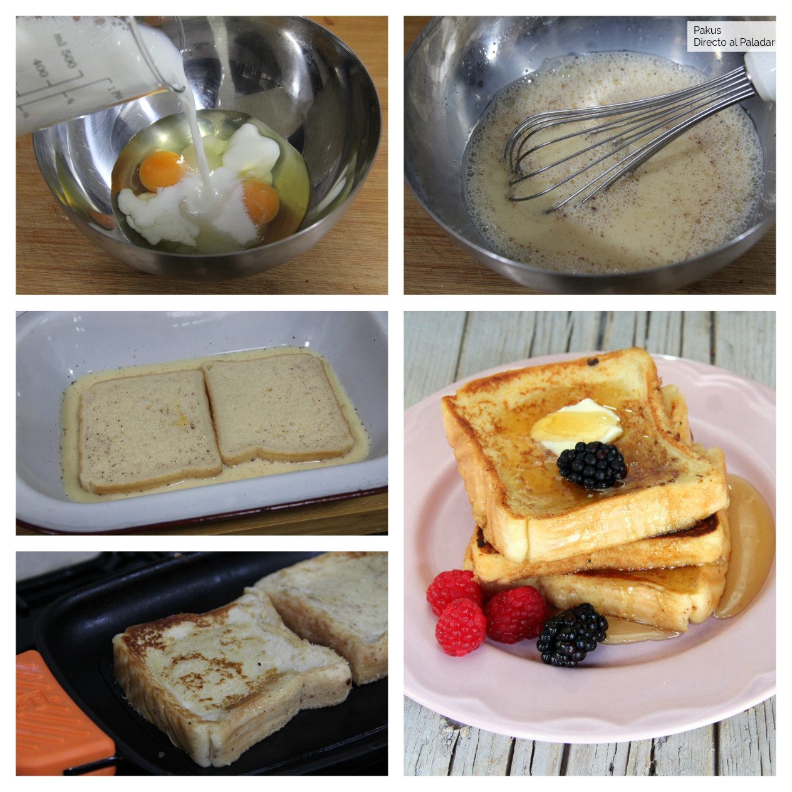

| Ingredientes | Cantidad |
|---|---|
| Pan de molde, rebanadas gruesas | 4 u |
| Huevos | 2 |
| Azúcar 4 cucharadas | |
| Escencia de vainilla | |
| Canela molida | |
| Leche entera | 225 ml |
| Mantequilla para dorarlas en la sartén |
Para hacer las tostadas francesas, podemos utilizar rebanadas de pan de hogaza o utilizar rebanadas gruesas de pan de molde, que es lo más habitual. Lo primero que hacemos, como cuando preparamos torrijas es un baño en el que sumergiremos el pan para que se reblandezca y quede cremoso por dentro. Para ello, mezclamos los huevos bien batidos con la leche, el azúcar, la canela y un poco de esencia de vainilla. Añadimos también una pizca de sal, que hará que nuestras tostadas francesas sean más sabrosas. Batimos bien y vertemos la mezcla en una bandeja profunda, donde colocaremos las rebanadas de pan para que se empapen bien, dándoles la vuelta de vez en cuando hasta que las rebanadas de pan hayan absorbido todo el líquido.
A continuación ponemos al fuego una plancha, o si no tenéis, una sartén grande. Las hacemos a fuego lento para que no se quemen sino que se cocinen también por dentro. Para ello, derretimos un poco de mantequilla y doramos las tostadas francesas por ambos lados, añadiendo un poco más de mantequilla cada vez que pongamos en la plancha una nueva rebanada.